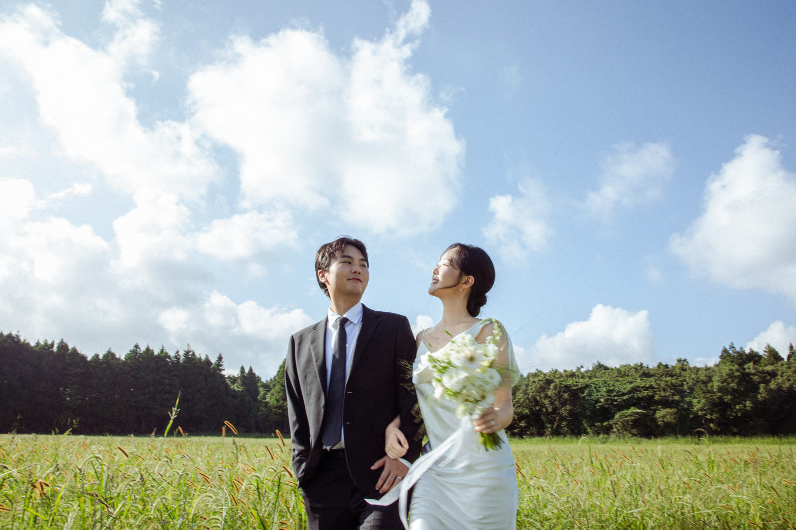

<meta charset="utf-8">
<meta name="viewport" content="width=device-width, initial-scale=1, viewport-fit=cover">
<title>진용·하림 인사말</title>
<meta name="claude:viewport-fit-sides" content="cover">
<link rel="preconnect" href="https://fonts.googleapis.com">
<link rel="preconnect" href="https://fonts.gstatic.com" crossorigin>
<link href="https://fonts.googleapis.com/css2?family=Archivo:wght@500&family=Noto+Sans+KR:wght@400;500&display=swap" rel="stylesheet">
<link rel="stylesheet" href="SectionKit.css">
<style>
  /* Greeting: the one section on black (the user's request), no title. One postage stamp, the stamp paper
     the user supplied with two colour photos set in it one above the other (the same two photos and framing as
     the printed invitation cover: photo-12 on top, photo-04 below), then the greeting in paper-coloured type.
     Every rule sits under .greeting so the black and the light type stay in this section of the merged page. */

  /* Full width black: the column stays 440px like every section (the padding grows on wide screens), but the
     black runs edge to edge, so on a desktop it reads as a band across the paper page, not a black card.
     Its top and bottom edges are plain straight cuts against the paper sections above and below. */
  .greeting {
    max-width: none;
    padding-left: max(24px, env(safe-area-inset-left, 0px), calc(50% - 196px));
    padding-right: max(24px, env(safe-area-inset-right, 0px), calc(50% - 196px));
    padding-block: 56px 60px;
    /* The same stamp-paper grain as the rest of the page, made black (textures/paper-black.png: a seamless
       400px tile shown at 200px). Plain black shows until it loads. */
    background: #000 url("textures/paper-black.png") 0 0 / 200px 200px repeat;
    color: var(--paper);
  }

  /* The stamp: about a quarter of the screen (100px at 390px). Sized by its aspect ratio before the images arrive.
     textures/stamp-frame.png is 595 x 860, cropped to the paper (teeth included), transparent outside the cut. */
  .greeting__stamp {
    position: relative;
    width: clamp(86px, 25.6vw, 112px);
    aspect-ratio: 595 / 860;
    margin: 0 auto;
  }

  .greeting__frame {
    display: block;
    width: 100%;
    height: 100%;
  }

  /* The photo window: 62px in from every edge of the 595 x 860 paper (the teeth reach 18-19px in, so about
     43px of white paper, 7% of the width, shows past the deepest hole), split into two equal cells stacked one
     above the other, as on the printed invitation cover: 471 x 361 each, with a 14px strip of paper (2.4% of the
     width, much narrower than the outer margin) between them. Paper px: top cell y 62-423, bottom cell y 437-798.
     All in %, so it holds at every size: top/height are % of the stamp's height, left/width % of its width. */
  .greeting__cell {
    position: absolute;
    left: 10.420%;
    display: block;
    width: 79.160%;
    height: 41.977%;
    overflow: hidden;
  }

  .greeting__cell--top {
    top: 7.209%;
  }

  .greeting__cell--bottom {
    top: 50.814%;
  }

  /* Each photo (1600 x 1066) is cropped to the cover's framing: scaled by its width (% of the cell, so % of the
     paper width) and shifted by left/top (% of the cell's width/height). Height follows the photo's own ratio.
     The crop is 1.305:1, the cell's ratio, so the photo always fills the cell exactly. */
  .greeting__photo {
    position: absolute;
    display: block;
    max-width: none;
    height: auto;
    object-fit: cover;
  }

  /* photo-12, source x 520-1060, y 294-708: the groom's cheek against the laughing bride's, heads to collars,
     a little backlit sky above. */
  .greeting__cell--top .greeting__photo {
    top: -71.033%;
    left: -96.296%;
    width: 296.296%;
  }

  /* photo-04, source x 510-1090, y 430-874: side by side under the blue sky, heads to the bouquet, the bride
     looking up at the groom. */
  .greeting__cell--bottom .greeting__photo {
    top: -96.729%;
    left: -87.931%;
    width: 275.862%;
  }

  .greeting__note {
    margin-top: 52px;
    color: var(--paper);
  }
</style>

<section class="section greeting" data-tone="dark" aria-label="인사말">
  <div class="greeting__stamp" data-stamp>
    
    <span class="greeting__cell greeting__cell--top">
      
    </span>
    <span class="greeting__cell greeting__cell--bottom">
      
    </span>
  </div>

  <p class="prose greeting__note">
    겨울 끝자락에 만난 두 사람이<br>
    봄을 몇 번이나 함께 맞았습니다.<br>
    이제 서로의 계절이 되어<br>
    한 집에서 봄을 기다리려 합니다.<br>
    햇살 가득한 온실에서 내딛는<br>
    저희의 첫걸음을 지켜봐 주세요.
  </p>
</section>
